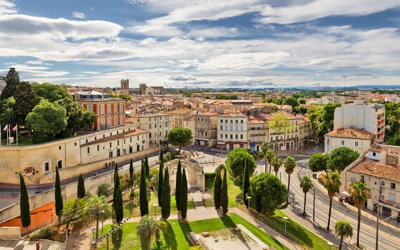
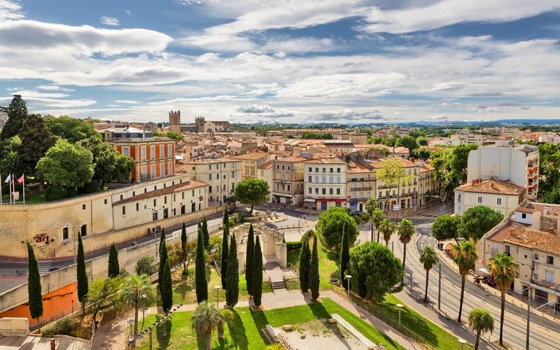

2-FRANCE:

 


Why should you go to France??
1. Glamorous cities
in FranceInstead of a person, how about falling in love with city itself when you visit Paris? If you’re a lover of art, cuisine, architecture or anything poetic- it’s very likely you’ll never want to leave Paris ever. Apart from the French capital, you definitely should not miss a visit to the best cities in France - Avignon, Nice, Bordeaux, Lyon, Nice, Cannes, Toulouse, Marseille!
Also check: France Tourism
2. Picturesque villages
Villages in FranceDid you know that almost 80% of France is mostly countryside? French villages are not something you can easily overlook. From the gorgeous Mont-Saint-Michel, to the quiet Strasbourg, these are a few of the unique places to visit in France. Fresh home-made wines, delicious cheese and sweets and the warmth and hospitality of its people.
Flights and Hotels are always better booked together! Check out our Flights + Hotels deals!
3. Spectacular beaches
Beaches in FranceThe southern France is a place of a never-ending coastline, sandy beaches and a pleasant sun. From Monte-Carlo to Saint Tropez, to the famous Normandy – France has a beach for everyone. Why visit France? Still need more answers, read on!
4. Art, culture, and cinema
1 of 2
CannesCannes
art in France
Be it popular culture, art, history or architecture – you’ll see a distinctive French style in every nook and corner of this beautiful country. Home to Louvre, unarguably one of the best art museums in the world, France is also the place that originated the famed art movement of Impressionism. The country that gave us movies like Amelie and Les Diaboliques and directors such as Luc Besson and Francois Truffaut, is bound to have a rich taste in cinema. Also, how can one forget the renowned Cannes Film Festival?
Check out: France Immortalised In 7 Iconic Paintings
5. French cuisine
French cuisine
Steak tartare
You simply cannot go to France and not be awestruck by its delicious cuisine. All that you’ve heard about this country’s famous cuisine is correct. From its sauces, bread, steak tartare and pastries, to its mouth-watering cheese – one just can’t get enough of French food! Moreover, France is also well known for its quaint pavement cafes and bars to renowned Michelin starred restaurants of celebrity chefs.
6. Winter sports haven
hiking in the Alps
Tour du Mont Blanc
Home to some of the most exciting as well as varied skiing in the world, France has a level for everybody and highly trained professional instructors. The highest mountain in the Alps, Mont Blanc, is a paradise for hikers, climbers, and mountain-bikers.
7. Shoppers' Mecca
shopping in France
Rue de Rivoli, Paris
Out of the many reasons to visit France, shopping is definitely one of them! We all know that Paris is the one of the most sought-after fashion capitals in the world, which also makes it a very popular shopping destination. How could we possibly argue with that when the country is the birthplace of legends like Coco Chanel, Christian Dior, Christian Lacroix, and Yves Saint-Laurent? Your trip to France is incomplete without going on a shopping spree.
8. Captivating churches
Church in France
Notre-Dame
Each year, million of tourists visit France to see Gothic churches and cathedrals dating back to centuries. France is home to many architecturally and historically significant churches; Notre-Dame, Sainte-Chapelle, The Abbey at Mont St-Michel - they are simply majestic, and are the best things to see in France. Visiting and exploring the famous churches is one of the reasons why France is so popular among avid travellers.
9. Fine wine
Wine in France
Some of the best wines the world has ever tasted belongs to France. The country produces between 50 and 60 million hectolitres (each hectolitre equals to 100 litres) of wine every year. Apart from the clichéd Champagne and Chardonnay, there are a plethora of other home-made French wines you must try as well.
10. Convenient location
Eiffel Tower, Paris
Apart from sharing borders with eight other countries, France is only a short ferry ride away from the UK. So you could hop onto other destinations as well before or after visiting France.